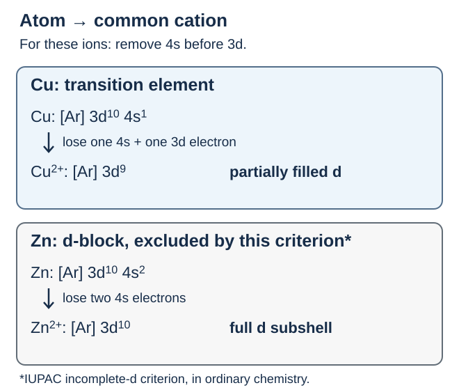
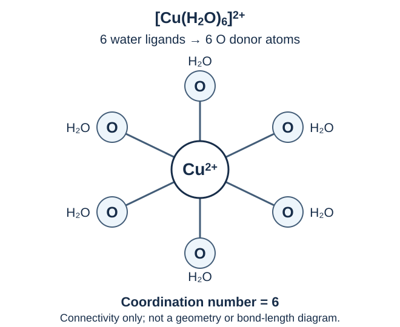
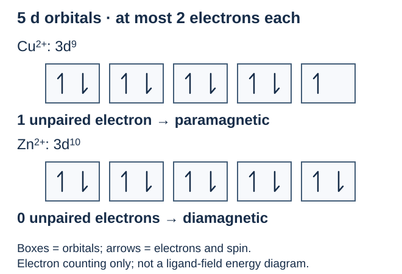

เรื่องนี้ต้องจำ: ตำแหน่งและนิยาม การจัดเรียงอิเล็กตรอน สมบัติโลหะ เลขออกซิเดชัน สารเชิงซ้อน สี แม่เหล็ก และตัวเร่งปฏิกิริยา · ตอบก่อนเปิดเฉลย มีช่องเขียนหลังทุกข้อย่อย
1. อยู่ตรงไหน และใช้อะไรตัดสินว่าเป็นธาตุแทรนซิชัน?
ธาตุบล็อก d อยู่บริเวณกลางตารางธาตุ หมู่ 3–12; แถวคาบ 4 เรียงเป็น Sc, Ti, V, Cr, Mn, Fe, Co, Ni, Cu, Zn ชั้นย่อย d มี 5 ออร์บิทัล แต่ละออร์บิทัลบรรจุได้มากที่สุด 2 อิเล็กตรอน จึงรวมได้ 10 อิเล็กตรอน คำว่า “d ไม่เต็ม” ในที่นี้หมายถึงมี 1–9 อิเล็กตรอน
ตามนิยาม IUPAC ธาตุแทรนซิชันคือธาตุที่อะตอมมีชั้นย่อย d ไม่เต็ม หรือเกิดไอออนบวกที่มีชั้นย่อย d ไม่เต็มได้ จึงต้องพิจารณาทั้งอะตอมและไอออนบวก ไม่ดูเฉพาะอะตอมเป็นกลาง
ตำแหน่งในบล็อก d กับการเป็นธาตุแทรนซิชันตามนิยามนี้ไม่ตรงกันทั้งหมด: Zn อยู่บล็อก d แต่ไม่จัดเป็นธาตุแทรนซิชันตามเกณฑ์นี้ในเคมีทั่วไป เหตุผลอยู่ที่การจัดเรียงอิเล็กตรอนในช่วงถัดไป
คำถาม 1 — ตำแหน่งกับนิยาม
ก. ธาตุบล็อก d อยู่บริเวณใดของตารางธาตุ และชั้นย่อย d บรรจุอิเล็กตรอนได้มากที่สุดกี่ตัว?
ข. การดูเฉพาะการจัดเรียงอิเล็กตรอนของอะตอมเป็นกลางเพียงพอสำหรับตัดสินว่าเป็นธาตุแทรนซิชันหรือไม่? เพราะอะไร?
ก. อยู่กลางตารางธาตุ หมู่ 3–12; ชั้นย่อย d มี 5 ออร์บิทัล ออร์บิทัลละไม่เกิน 2 ตัว รวมได้ 10 อิเล็กตรอน
ข. ไม่เพียงพอ ต้องพิจารณาไอออนบวกที่เกิดได้ด้วย เพราะนิยามครอบคลุมธาตุที่อะตอมมี d ไม่เต็ม หรือเกิดไอออนบวกที่มี d ไม่เต็มได้
2. การจัดเรียงอิเล็กตรอน: สร้างไอออนแล้วเอาออกจากไหน?
[Ar] แทนแกนอิเล็กตรอน 18 ตัวที่จัดเรียงเหมือนอะตอมอาร์กอน; เลขยกกำลังหลัง 3d หรือ 4s คือจำนวนอิเล็กตรอนในชั้นย่อยนั้น ตารางนี้เป็นการจัดเรียงใน สถานะพื้นของอะตอมเป็นกลาง
| อะตอม | การจัดเรียงอิเล็กตรอน |
|---|---|
| Sc | [Ar] 3d1 4s2 |
| Cr | [Ar] 3d5 4s1 |
| Fe | [Ar] 3d6 4s2 |
| Cu | [Ar] 3d10 4s1 |
| Zn | [Ar] 3d10 4s2 |
Cr และ Cu เป็นข้อยกเว้นจากแบบเติมอย่างง่าย ต้องใช้การจัดเรียงสถานะพื้นจริงข้างต้น เมื่อสร้างไอออนบวกของธาตุแถวนี้ นำอิเล็กตรอนออกจาก 4s ก่อน 3d แม้แบบเติมพื้นฐานจะวาง 4s ก่อน 3d; การนำออกไม่ใช่การย้อนลำดับเติมแบบตรง ๆ

คำถาม 2 — นำ 4s ออกก่อน และแยก Cu–Zn
ก. เขียนการจัดเรียงอิเล็กตรอนของ Fe2+ และ Fe3+ พร้อมระบุว่านำอิเล็กตรอนจากชั้นย่อยใดออกก่อน
ข. เขียนการจัดเรียงอิเล็กตรอนของ Cu+, Cu2+ และ Zn2+
ค. ทำไม Cu จัดเป็นธาตุแทรนซิชัน แต่ Zn ไม่จัดตามเกณฑ์เดียวกันในเคมีทั่วไป ทั้งที่อะตอมทั้งคู่มี 3d10?
ก. Fe2+: [Ar] 3d6; Fe3+: [Ar] 3d5 เริ่มจาก Fe [Ar] 3d6 4s2 นำ 4s ออก 2 ตัวก่อน แล้วจึงนำ 3d ออกอีก 1 ตัวเมื่อสร้าง Fe3+
ข. Cu+: [Ar] 3d10; Cu2+: [Ar] 3d9; Zn2+: [Ar] 3d10 โดยนำ 4s ออกก่อน 3d
ค. Cu สร้าง Cu2+ ที่มี 3d9 ไม่เต็มได้ ส่วนอะตอม Zn และไอออน Zn2+ ที่พบทั่วไปมี 3d10 เต็ม จึงไม่ผ่านเกณฑ์ d ไม่เต็มในเคมีทั่วไป
3. สมบัติทางกายภาพ: เป็นโลหะ แต่สมบัติเหล่านี้ไม่ใช่นิยาม
ธาตุแทรนซิชันเป็นโลหะ นำไฟฟ้าและความร้อน อิเล็กตรอนที่เคลื่อนที่ผ่านโครงผลึกโลหะได้ช่วยในการนำไฟฟ้า หลายชนิดตีเป็นแผ่นหรือดึงเป็นเส้นได้ และหลายชนิดแข็ง มีความหนาแน่นและจุดหลอมเหลวสูง แต่ค่าจริงแตกต่างกันตามธาตุ
การทำเป็น โลหะผสม ช่วยปรับสมบัติให้เหมาะกับงาน เช่น ความแข็งหรือการทนการกัดกร่อน สมบัติโลหะเหล่านี้ช่วยอธิบายการใช้ประโยชน์ แต่ ไม่ใช่เกณฑ์นิยามธาตุแทรนซิชัน
คำถาม 3 — เชื่อมสมบัติกับการใช้
ก. สมบัติใดของทองแดงช่วยให้ใช้ทำสายไฟได้? ระบุอย่างน้อย 2 สมบัติ
ข. โลหะที่นำไฟฟ้าได้ทุกชนิดเป็นธาตุแทรนซิชันหรือไม่? ยกตัวอย่างประกอบ
ก. นำไฟฟ้าได้ดี และดึงเป็นเส้นได้ จึงทำเป็นลวดสายไฟได้
ข. ไม่ใช่ เช่น Al นำไฟฟ้าได้ แต่เป็นธาตุหมู่หลักในบล็อก p ไม่ใช่ธาตุแทรนซิชัน
4. เลขออกซิเดชัน: ธาตุเดียวกันมีได้หลายค่า
เลขออกซิเดชัน คือค่าที่ใช้กำหนดการนับอิเล็กตรอนอย่างเป็นแบบแผน ไม่ใช่ประจุจริงบนอะตอมในสารประกอบทุกชนิด สำหรับไอออนอะตอมเดี่ยว เลขออกซิเดชันเท่ากับประจุไอออน เช่น Fe2+ มีเลขออกซิเดชัน +2
ธาตุแทรนซิชันหลายชนิดมีเลขออกซิเดชันได้หลายค่า ตารางนี้เป็น ตัวอย่างค่าที่พบบ่อย ไม่ใช่รายการครบทุกค่า
| ธาตุ | ตัวอย่างเลขออกซิเดชัน |
|---|---|
| Fe | +2, +3 |
| Cu | +1, +2 |
| Cr | +2, +3, +6 |
| Mn | +2, +4, +7 |
ผลรวมเลขออกซิเดชันเท่ากับประจุรวมของสารหรือไอออน ในตัวอย่างต่อไปนี้ใช้ Cl = −1, O = −2 และ K = +1; สารเป็นกลางมีผลรวม 0 ส่วนไอออนต้องใช้ประจุของไอออนนั้น
คำถาม 4 — แยกเลขออกซิเดชันจากประจุไอออน
ก. หาเลขออกซิเดชันของ Fe ใน FeCl2 และ FeCl3
ข. หาเลขออกซิเดชันของ Mn ใน KMnO4 และ MnO4− แล้วเปรียบเทียบกับประจุรวมของ MnO4−
ก. ให้ \(x\) เป็นเลขออกซิเดชันของ Fe: FeCl2 มี \(x+2(-1)=0\) จึงเป็น +2; FeCl3 มี \(x+3(-1)=0\) จึงเป็น +3
ข. ให้ \(x\) เป็นเลขออกซิเดชันของ Mn: KMnO4 มี \(1+x+4(-2)=0\) จึงได้ +7; MnO4− มี \(x+4(-2)=-1\) จึงได้ +7 เช่นกัน แต่ประจุรวมของไอออนเป็น −1 เลขออกซิเดชัน +7 ของ Mn ไม่ได้หมายถึงมี Mn7+ อิสระในสารละลาย
5. สารเชิงซ้อน: โลหะกลางจับกับลิแกนด์
ลิแกนด์ คืออะตอม โมเลกุล หรือไอออนที่ให้อิเล็กตรอนคู่แก่โลหะกลางเพื่อสร้างพันธะ เช่น H2O, NH3 และ Cl− หน่วยเชิงซ้อนประกอบด้วยโลหะกลางกับลิแกนด์ที่จับอยู่ เขียนรวมในวงเล็บเหลี่ยม เช่น [Cu(H2O)6]2+
เลขโคออร์ดิเนชัน คือจำนวนอะตอมผู้ให้คู่อิเล็กตรอนที่จับกับโลหะกลางโดยตรง ในตัวอย่างนี้ H2O และ Cl− แต่ละลิแกนด์จับผ่านอะตอมเดียว จึงนับจำนวนลิแกนด์ได้เท่ากับเลขโคออร์ดิเนชัน แต่ไม่ควรใช้วิธีนับนี้กับลิแกนด์ทุกชนิด

คำถาม 5 — ระบุส่วนประกอบและนับการจับ
ก. ใน [Cu(H2O)6]2+ โลหะกลางและลิแกนด์คืออะไร? เลขโคออร์ดิเนชันเท่าใด?
ข. ใน [CuCl4]2− จงหาเลขออกซิเดชันของ Cu เลขโคออร์ดิเนชัน และประจุรวมของไอออนเชิงซ้อน
ก. โลหะกลางคือ Cu2+ ลิแกนด์คือน้ำ H2O 6 โมเลกุล แต่ละโมเลกุลจับผ่าน O หนึ่งอะตอม เลขโคออร์ดิเนชันจึงเป็น 6
ข. ให้ \(x\) เป็นเลขออกซิเดชันของ Cu: \(x+4(-1)=-2\) จึงได้ Cu เป็น +2; Cl− 4 ลิแกนด์จับผ่าน Cl อย่างละอะตอม จึงมีเลขโคออร์ดิเนชัน 4 และไอออนเชิงซ้อนมีประจุรวม −2
6. สี: ขึ้นกับทั้งโลหะ เลขออกซิเดชัน และลิแกนด์
สารประกอบของธาตุแทรนซิชันจำนวนมากมีสี เพราะดูดกลืนแสงที่มองเห็นบางช่วงคลื่น แสงที่เหลือผ่านออกมาหรือสะท้อนมาจึงให้สีที่เห็น สีที่เห็นไม่ใช่สีของแสงที่ถูกดูดกลืน
ในสารเชิงซ้อนหลายชนิด ลิแกนด์ทำให้ออร์บิทัล d มีพลังงานต่างกัน การดูดกลืนแสงจึงทำให้อิเล็กตรอนเปลี่ยนระดับพลังงานได้ สีขึ้นกับชนิดโลหะ เลขออกซิเดชัน และลิแกนด์ แต่สีของสารไม่ได้เกิดจากการเปลี่ยนระดับระหว่างออร์บิทัล d เท่านั้น
ตัวอย่างสีของไอออนในสารละลายน้ำ:
| ไอออนในสารละลาย | สีโดยทั่วไป |
|---|---|
| [Cu(H2O)6]2+ | ฟ้า |
| [Cu(NH3)4(H2O)2]2+ | น้ำเงินเข้ม |
| MnO4− | ม่วง |
| CrO42− | เหลือง |
| Cr2O72− | ส้ม |
สารเชิงซ้อนของ Cu ทั้งสองชนิดในตารางมี Cu เลขออกซิเดชัน +2 เท่ากัน แต่ลิแกนด์ต่างกันจึงมีสีต่างกัน สีและความเข้มที่สังเกตยังขึ้นกับองค์ประกอบและความเข้มข้นของสารละลาย
ไม่ใช่ทุกไอออนของธาตุแทรนซิชันมีสี เช่น Sc3+ ในสารละลายน้ำโดยทั่วไปไม่มีสี แม้ Sc จะเป็นธาตุแทรนซิชัน
คำถาม 6 — สีเปลี่ยน แปลว่าเลขออกซิเดชันเปลี่ยนเสมอไหม?
ก. การเปลี่ยนจาก [Cu(H2O)6]2+ สีฟ้าเป็น [Cu(NH3)4(H2O)2]2+ สีน้ำเงินเข้ม จำเป็นต้องเปลี่ยนเลขออกซิเดชันของ Cu หรือไม่? อะไรเปลี่ยน?
ข. Sc3+ ไม่มีสี ขัดกับการที่ Sc เป็นธาตุแทรนซิชันหรือไม่? อธิบายด้วยการจัดเรียงอิเล็กตรอน
ก. ไม่จำเป็น เพราะทั้งสองชนิดมี Cu เลขออกซิเดชัน +2 เท่ากัน สิ่งที่เปลี่ยนคือชนิดของลิแกนด์รอบ Cu จึงเปลี่ยนการดูดกลืนแสงและสีที่เห็น
ข. ไม่ขัด อะตอม Sc มี [Ar] 3d1 4s2 จึงผ่านนิยาม แต่ Sc3+ มี [Ar] หรือ 3d0 และโดยทั่วไปไม่มีสีในน้ำ การมีสีไม่ใช่นิยามของธาตุแทรนซิชัน
7. สมบัติแม่เหล็ก: ดูอิเล็กตรอนเดี่ยว
อิเล็กตรอนเดี่ยว คืออิเล็กตรอนที่ยังไม่มีอิเล็กตรอนสปินตรงข้ามจับคู่ในออร์บิทัลเดียวกัน สปีชีส์ที่มีอิเล็กตรอนเดี่ยวมีสมบัติ พาราแมกเนติก ถูกดึงดูดเข้าบริเวณสนามแม่เหล็กที่เข้มกว่า; เมื่ออิเล็กตรอนจับคู่หมดมีสมบัติ ไดอะแมกเนติก ถูกผลักออกจากบริเวณสนามเข้มกว่าอย่างอ่อน ๆ
อย่าสรุปว่าธาตุแทรนซิชันและสารประกอบทุกชนิดมีสมบัติแม่เหล็กเหมือนกัน สำหรับสารเชิงซ้อน การจับคู่ของอิเล็กตรอนยังขึ้นกับลิแกนด์และการแยกระดับพลังงานด้วย การเป็นพาราแมกเนติกไม่ใช่สมบัติแม่เหล็กถาวรแบบเฟอร์โรแมกเนติกของเหล็ก

คำถาม 7 — นับอิเล็กตรอนเดี่ยวก่อนระบุสมบัติ
ก. Cu2+ มี 3d9 และ Zn2+ มี 3d10 แต่ละชนิดมีอิเล็กตรอนเดี่ยวกี่ตัว? ใช้ 5 ออร์บิทัล d ช่วยอธิบาย
ข. Cu2+ และ Zn2+ ชนิดใดเป็นพาราแมกเนติก และชนิดใดเป็นไดอะแมกเนติก?
ก. d มี 5 ออร์บิทัล ออร์บิทัลละได้ไม่เกิน 2 ตัว: 3d9 จับคู่ 4 ออร์บิทัลและเหลือเดี่ยว 1 ตัว; 3d10 จับคู่ครบ 5 ออร์บิทัล จึงมีอิเล็กตรอนเดี่ยว 0 ตัว
ข. Cu2+ เป็นพาราแมกเนติก เพราะมีอิเล็กตรอนเดี่ยว 1 ตัว; Zn2+ เป็นไดอะแมกเนติก เพราะอิเล็กตรอนจับคู่หมด
8. ตัวเร่งปฏิกิริยา: ใช้ได้ทั้งธาตุและสารประกอบ
ตัวเร่งปฏิกิริยา เพิ่มอัตราปฏิกิริยาผ่านเส้นทางที่มีพลังงานก่อกัมมันต์ต่ำลง ตัวเร่งอาจเข้าร่วมในขั้นย่อย แต่เกิดกลับคืนเมื่อจบวัฏจักรการเร่ง ธาตุแทรนซิชันและสารประกอบหลายชนิดใช้เป็นตัวเร่งได้ เช่น ผ่านการรับ–ให้อิเล็กตรอน หรือการยึดจับสารตั้งต้นบนผิวอย่างเหมาะสม
| ตัวอย่างตัวเร่ง | การใช้ |
|---|---|
| Fe | การสังเคราะห์แอมโมเนีย |
| ตัวเร่งที่มี V2O5 เป็นองค์ประกอบสำคัญ | เร่ง SO2 ให้เป็น SO3 ในกระบวนการผลิตกรดซัลฟิวริก |
| MnO2 | เร่งการสลาย H2O2 เป็นน้ำและออกซิเจน |
ที่อุณหภูมิและเงื่อนไขเดิม ตัวเร่งช่วยให้ เข้าสู่สมดุลเร็วขึ้น แต่ไม่เปลี่ยนตำแหน่งสมดุล จึงไม่เพิ่มสัดส่วนผลิตภัณฑ์ ณ สมดุลด้วยตัวมันเอง
คำถาม 8 — แยกอัตราเร็วกับสมดุล
ก. ยกตัวอย่างตัวเร่งที่เป็นธาตุ 1 ชนิด และที่เป็นสารประกอบ 1 ชนิด พร้อมระบุปฏิกิริยาที่ใช้
ข. การใช้ตัวเร่งในการสังเคราะห์แอมโมเนียทำให้สัดส่วนแอมโมเนีย ณ สมดุลเพิ่มขึ้นเสมอหรือไม่ เมื่อเงื่อนไขอื่นเท่าเดิม? เพราะอะไร?
ก. ตัวเร่งที่เป็นธาตุ: Fe ใช้สังเคราะห์แอมโมเนีย; ที่เป็นสารประกอบ: MnO2 ใช้เร่งการสลาย H2O2 เป็นน้ำและออกซิเจน หรือยกตัวอย่างตัวเร่งที่มี V2O5 สำหรับ SO2 → SO3
ข. ไม่เพิ่มด้วยตัวเร่งเพียงอย่างเดียว ตัวเร่งเร่งทั้งทิศไปข้างหน้าและย้อนกลับ ทำให้ถึงสมดุลเร็วขึ้น แต่ที่เงื่อนไขเดิมองค์ประกอบ ณ สมดุลไม่เปลี่ยน
แหล่งศึกษาต่อและตรวจสอบ
- สสวท. Project 14 — ธาตุแทรนซิชัน
- IUPAC Gold Book — transition element
- OpenStax Chemistry 2e 19.1 — สมบัติและการจัดเรียงอิเล็กตรอน
- OpenStax Chemistry 2e 19.2 — สารเชิงซ้อน
- OpenStax Chemistry 2e 19.3 — สีและสมบัติแม่เหล็ก
- RSC Education — สารเชิงซ้อนและสี
- RSC Education — ตัวเร่งจากธาตุแทรนซิชัน
- RSC Education — ตัวเร่งการสลายไฮโดรเจนเปอร์ออกไซด์
Recall goals: Position and definition, electron configurations, metallic properties, oxidation states, complexes, colour, magnetism, and catalysts. Answer before revealing each solution; writing space follows every subpart.
1. Where are they, and what makes an element a transition element?
The d-block occupies the centre of the periodic table, groups 3–12. Its period-4 row is Sc, Ti, V, Cr, Mn, Fe, Co, Ni, Cu, Zn. A d subshell has five orbitals, each holding at most two electrons, for a total of 10 electrons. Here, “partially filled d” means 1–9 electrons.
Under the IUPAC definition, a transition element has an incomplete d subshell in its atom, or can form cations with an incomplete d subshell. Consider both the atom and the cations it can form, rather than only the neutral atom.
Being in the d-block and meeting this definition are not identical: Zn is in the d-block but is not classified as a transition element by this criterion in ordinary chemistry. The next section explains this using electron configurations.
Question 1 — Position and definition
a. Where is the d-block in the periodic table, and how many electrons can a d subshell hold at most?
b. Is the electron configuration of the neutral atom alone enough to decide whether an element is a transition element? Explain.
a. It is in the centre of the periodic table, groups 3–12. Five d orbitals holding at most two electrons each give a maximum of 10 electrons.
b. No. Also consider the cations it can form: the definition includes an incomplete d subshell in either the atom or a cation it can form.
2. Electron configurations: which electrons leave first?
[Ar] represents an 18-electron core with the configuration of an argon atom. A superscript after 3d or 4s gives the number of electrons in that subshell. The table shows ground-state configurations of neutral atoms.
| Atom | Electron configuration |
|---|---|
| Sc | [Ar] 3d1 4s2 |
| Cr | [Ar] 3d5 4s1 |
| Fe | [Ar] 3d6 4s2 |
| Cu | [Ar] 3d10 4s1 |
| Zn | [Ar] 3d10 4s2 |
Cr and Cu are exceptions to the simplest filling pattern; use their actual ground-state configurations above. When forming cations of these first-row elements, remove 4s electrons before 3d electrons. Although the basic filling scheme places 4s before 3d, removal is not a simple reversal of that scheme.
Question 2 — Remove 4s first; distinguish Cu and Zn
a. Write the electron configurations of Fe2+ and Fe3+, and state which subshell loses electrons first.
b. Write the electron configurations of Cu+, Cu2+, and Zn2+.
c. Why is Cu classified as a transition element, whereas Zn is excluded by the same criterion in ordinary chemistry, even though both atoms have 3d10?
a. Fe2+: [Ar] 3d6; Fe3+: [Ar] 3d5. Starting from Fe [Ar] 3d6 4s2, remove both 4s electrons first, then one 3d electron to form Fe3+.
b. Cu+: [Ar] 3d10; Cu2+: [Ar] 3d9; Zn2+: [Ar] 3d10. Remove 4s electrons before 3d electrons.
c. Cu forms Cu2+ with an incomplete 3d9 subshell. The Zn atom and its common Zn2+ ion have full 3d10 subshells, so Zn does not meet the incomplete-d criterion in ordinary chemistry.
3. Physical properties: metallic behaviour is not the definition
Transition elements are metals that conduct electricity and heat. Electrons able to move through the metallic lattice contribute to electrical conduction. Many are malleable or ductile, and many are hard, dense, and have high melting points. Actual values vary between elements.
Making alloys can adjust properties such as hardness or corrosion resistance for a particular use. These metallic properties help explain applications, but do not define a transition element.
Question 3 — Connect properties with uses
a. Which properties make copper useful for electrical wiring? Give at least two.
b. Is every metal that conducts electricity a transition element? Give an example.
a. It conducts electricity well and is ductile, so it can be drawn into wires.
b. No. Al conducts electricity but is a main-group p-block element, not a transition element.
4. Oxidation states: one element can have several values
An oxidation state is a formal electron-accounting value, not the actual charge on an atom in every compound. For a monatomic ion, its oxidation state equals its charge: Fe2+ has oxidation state +2.
Many transition elements have several oxidation states. These are common examples, not exhaustive lists.
| Element | Example oxidation states |
|---|---|
| Fe | +2, +3 |
| Cu | +1, +2 |
| Cr | +2, +3, +6 |
| Mn | +2, +4, +7 |
The sum of oxidation states equals the overall charge of the species. For the following examples, use Cl = −1, O = −2, and K = +1. The sum is 0 for a neutral compound and equals the ion charge for an ion.
Question 4 — Distinguish oxidation state from ion charge
a. Find the oxidation state of Fe in FeCl2 and FeCl3.
b. Find the oxidation state of Mn in KMnO4 and MnO4−. Compare it with the overall charge of MnO4−.
a. Let \(x\) be the oxidation state of Fe. For FeCl2, \(x+2(-1)=0\), giving +2. For FeCl3, \(x+3(-1)=0\), giving +3.
b. Let \(x\) be the oxidation state of Mn. For KMnO4, \(1+x+4(-2)=0\), giving +7. For MnO4−, \(x+4(-2)=-1\), also giving +7. The overall ion charge is −1. Mn having oxidation state +7 does not imply free Mn7+ ions in solution.
5. Complexes: a central metal binds ligands
A ligand is an atom, molecule, or ion that donates an electron pair to a central metal to form a bond. Examples include H2O, NH3, and Cl−. A complex contains the metal and its bound ligands, enclosed in square brackets, as in [Cu(H2O)6]2+.
The coordination number counts donor atoms directly bonded to the central metal. In these examples, each H2O or Cl− ligand binds through one atom, so the ligand count equals the coordination number. This shortcut does not apply to every kind of ligand.
Question 5 — Identify components and count donor atoms
a. Identify the central metal and ligands in [Cu(H2O)6]2+. What is its coordination number?
b. For [CuCl4]2−, find the oxidation state of Cu, the coordination number, and the overall complex-ion charge.
a. The central metal is Cu2+ and the ligands are six H2O molecules. Each binds through one O atom, so the coordination number is 6.
b. Let \(x\) be the oxidation state of Cu. From \(x+4(-1)=-2\), Cu is +2. Four Cl− ligands each bind through one Cl atom, giving coordination number 4. The overall complex-ion charge is −2.
6. Colour depends on the metal, oxidation state, and ligands
Many transition-element compounds are coloured because they absorb selected wavelengths of visible light. The remaining transmitted or reflected light produces the colour observed. The observed colour is not the colour absorbed.
In many complexes, ligands split the d orbitals into different energies, allowing light absorption to promote electrons between levels. Colour depends on the metal, oxidation state, and ligands. However, transitions between d orbitals are not the only source of colour.
Examples of ion colours in aqueous solution:
| Ion in solution | Typical colour |
|---|---|
| [Cu(H2O)6]2+ | Blue |
| [Cu(NH3)4(H2O)2]2+ | Deep blue |
| MnO4− | Purple |
| CrO42− | Yellow |
| Cr2O72− | Orange |
Both Cu complexes in the table have Cu in oxidation state +2. Their different ligands produce different colours. The observed colour and intensity also depend on solution composition and concentration.
Not every ion of a transition element is coloured. For example, aqueous Sc3+ is normally colourless even though Sc is a transition element.
Question 6 — Does a colour change always mean an oxidation-state change?
a. Does changing blue [Cu(H2O)6]2+ into deep-blue [Cu(NH3)4(H2O)2]2+ require a change in the oxidation state of Cu? What changes?
b. Does colourless Sc3+ contradict the classification of Sc as a transition element? Explain using electron configurations.
a. No. Cu has oxidation state +2 in both complexes. The ligands around Cu change, which changes light absorption and the observed colour.
b. No. A Sc atom has [Ar] 3d1 4s2, meeting the definition. Sc3+ has [Ar], or 3d0, and is normally colourless in water. Colour is not the defining criterion for a transition element.
7. Magnetic properties: look for unpaired electrons
An unpaired electron has no opposite-spin partner in the same orbital. Species with unpaired electrons are paramagnetic and are attracted towards stronger magnetic fields. Species with all electrons paired are diamagnetic and are weakly repelled from stronger fields.
Do not assume that every transition element and compound has the same magnetic behaviour. In complexes, electron pairing also depends on the ligands and orbital-energy splitting. Paramagnetism is distinct from the permanent-magnet behaviour associated with ferromagnetic iron.
Question 7 — Count unpaired electrons, then classify
a. Cu2+ has 3d9 and Zn2+ has 3d10. How many unpaired electrons does each have? Explain using five d orbitals.
b. Which of Cu2+ and Zn2+ is paramagnetic, and which is diamagnetic?
a. A d subshell has five orbitals holding at most two electrons each. In 3d9, four orbitals are paired and one electron remains unpaired. In 3d10, all five orbitals are paired, giving zero unpaired electrons.
b. Cu2+ is paramagnetic because it has one unpaired electron. Zn2+ is diamagnetic because all its electrons are paired.
8. Catalysts: both elements and compounds can be used
A catalyst increases reaction rate by providing a pathway with lower activation energy. It can participate in individual steps but is regenerated at the end of the catalytic cycle. Many transition elements and their compounds act as catalysts through processes such as electron transfer or suitable binding of reactants at a surface.
| Example catalyst | Use |
|---|---|
| Fe | Ammonia synthesis |
| A catalyst based on V2O5 | Conversion of SO2 to SO3 in sulfuric acid manufacture |
| MnO2 | Decomposition of H2O2 into water and oxygen |
At the same temperature and other conditions, a catalyst helps the system reach equilibrium faster but does not shift the equilibrium position. By itself, it does not increase the equilibrium proportion of products.
Question 8 — Distinguish reaction rate from equilibrium
a. Give one elemental catalyst and one compound catalyst, stating a reaction in which each is used.
b. Does a catalyst in ammonia synthesis necessarily increase the equilibrium proportion of ammonia when other conditions are unchanged? Explain.
a. Elemental catalyst: Fe in ammonia synthesis. Compound catalyst: MnO2 in the decomposition of H2O2 into water and oxygen. A V2O5-based catalyst for SO2 → SO3 is another valid example.
b. No. The catalyst speeds both the forward and reverse reactions, bringing the system to equilibrium faster. Under the same conditions, the equilibrium composition is unchanged.
Sources and further study
- IPST Project 14 — Transition elements
- IUPAC Gold Book — transition element
- OpenStax Chemistry 2e 19.1 — Properties and electron configurations
- OpenStax Chemistry 2e 19.2 — Coordination chemistry
- OpenStax Chemistry 2e 19.3 — Colour and magnetic properties
- RSC Education — Transition elements and complex compounds
- RSC Education — Transition metal catalysts
- RSC Education — Catalysts for hydrogen peroxide decomposition